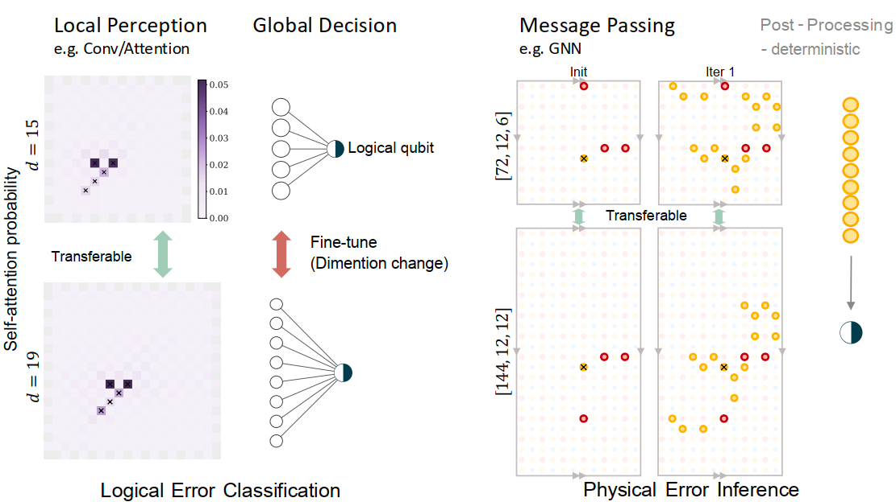

Neural Transfer Unification (NTU) for quantum error correction
Efficient foundation decoders for fault-tolerant quantum computing
How do we efficiently scale neural decoders? Neural Transfer Unification (NTU) is an architecture-agnostic transfer-learning framework that solves exactly this.
By mapping the scale-invariant structure of QEC codes to learned neural representations,
NTU allows error knowledge from smaller codes to transfer directly to massive fault-tolerant regimes—dramatically reducing compute overhead and completely eliminating the cold-start problem.
Ge Yan1,
Shanchuan Li1,2,
Shiyi Xiao1,3,
Pengyue Ma1,
Hanyan Cao4,
Feng Pan4,*, and
Yuxuan Du1,*
1 Nanyang Technological University
2 Tokyo University of Agriculture and Technology 3 Shanghai Jiao Tong University
4 Singapore University of Technology and Design
In structured quantum code families, such as planar surface codes or quasi-cyclic bivariate bicycle (BB) codes, the parity-check matrix is generated by repeated construction rules. This creates a strict structural isomorphism.
As the global code distance expands, the relative algebraic or geometric connections around any specific detector—its local topological neighborhood—remain universally constant. This scale invariance manifests identically across spatial translations, temporal syndrome extraction cycles, and large-distance scaling.
Structural isomorphism in neural perception
Because neural decoding relies on aggregating features from detector neighborhoods, the local representation learning process is fundamentally isomorphic to the scale-invariant structure of the QEC code.
By explicitly decoupling the architecture, we ensure that the heavy local perception backbone (which learns the invariant topological motifs) can be seamlessly transferred to larger lattices without representation collapse[cite: 110, 112]. Only the lightweight global decision layer needs to be fine-tuned to accommodate the newly expanded physical boundaries.

Interactive Companion
See the structural invariance in action.
Before diving into the performance metrics, use this sandbox to intuitively explore how physical errors map to detector events across different code distances, and observe how the fundamental local perception motif remains rigidly preserved.
data qubit physical error detector event local perception
Code layout[[49,1,7]]
Detector events0 events
Mechanism IntuitionErrors -> detectors
Code[[49,1,7]]
Data qubitsn = 49
Logical qubitsk = 1
Distanced = 7
Decoder input7 x 48
Current syndrome0 detector events
Main results
Transfer improves large-scale decoding for surface and BB codes.
The updated result figures show decoding performance, robustness under
detector-error bins, and transfer behavior. The text emphasizes panels
a and c, while panel b diagnoses the high-detector-error regime.
Surface code
Transfer scales the NTU-Transformer across distance.
Figure 2a compares logical error rate across physical error rates,
showing that the neural decoder remains competitive where matching
baselines are strained by correlated, degenerate detector events.
Figure 2b breaks down accuracy by detector-error count, and Figure
2c isolates the training effect: transfer initialization avoids the
cold-start plateau seen when large-distance models are trained from
scratch.
Updated surface-code Figure 2. Panels a and c highlight decoding
performance and transfer-versus-scratch training behavior.
PDF source
Bivariate bicycle code
The same principle transfers beyond planar geometry.
Figure 3a shows strong NTU-Transformer performance on the base BB
code against belief-propagation-based baselines. Figure 3b evaluates
robustness as detector-error count increases. Figure 3c shows the
larger [[144,12,12]] target case, where transferred
models rapidly improve while scratch training can stagnate near
random guessing.
Updated BB-code Figure 3. Panels a and c emphasize base-code
performance and transfer to the larger quantum LDPC code.
PDF source
Methods
Two model families match the two decoding routes.
NTU-Transformer directly predicts logical errors, while GNN-based
neural-BP predicts physical errors on the Tanner graph.
Logical-error prediction
NTU-Transformer
The Transformer route treats decoding as direct logical
classification. It receives the binary detector history from
d syndrome rounds and predicts the logical error
probability for each encoded qubit.
Input{0,1}d x mm detectors per round
Output[0,1]k
logical-error probabilities
01
Stem
Embed detector events with local code geometry, detector type,
and neighborhood roles so tokens already carry QEC structure.
02
Spatial transformer
Within each syndrome round, self-attention mixes spatially
related detector features and preserves the local motif.
03
Temporal recurrent path
Along the t axis, recurrent updates track
measurement noise and error chains that persist across rounds.
04
Cross-attention readout
Learned logical tokens query the spatiotemporal representation
and produce the final k-dimensional readout.
Physical-error prediction
GNN-based neural-BP
The graph route keeps the belief-propagation inductive bias but
makes the aggregation learnable. It predicts physical error
probabilities on data qubits instead of directly predicting the
logical vector.
checks
data qubits
Tanner graph
Variable nodes represent data qubits, check nodes represent
stabilizer constraints, and edges encode the parity-check matrix.
Message passing
The GNN alternates variable-to-check and check-to-variable
updates, mirroring BP while allowing learned nonlinear updates.
Parameterized aggregation
Learnable aggregation weights control how strongly neighboring
messages contribute, adapting BP to code-specific correlations.
Physical readout
The output is a per-data-qubit error probability map, which can
be converted into a correction before checking logical status.
Reference
Citation
@misc{yan2026efficientfoundationdecoders,
title = {Efficient foundation decoders for fault-tolerant quantum computing},
author = {Yan, Ge and Li, Shanchuan and Xiao, Shiyi and Ma, Pengyue and Cao, Hanyan and Pan, Feng and Du, Yuxuan},
year = {2026}
}
Paper and code assistant
Ask about NTU Decoder
Backend not connected yet. Deploy the Cloudflare Worker, then replace the endpoint in index.html.
Ask about the paper, the NTU-Transformer implementation, baselines, training script, or BB-code circuit generator.